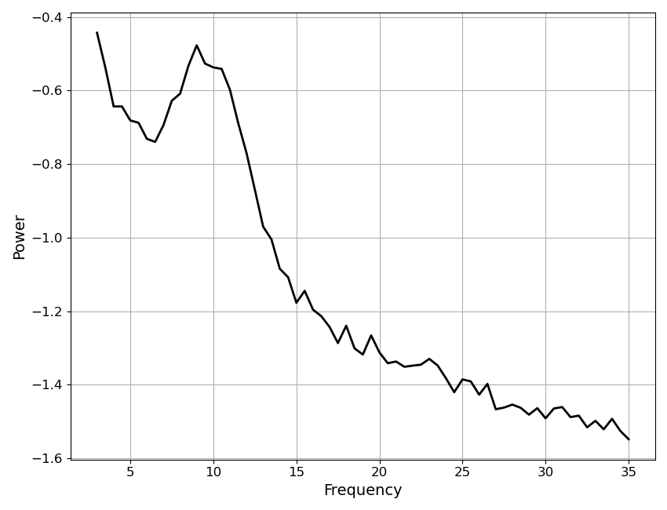

Note
Go to the end to download the full example code.
Model Sub-Objects¶
Introducing the objects used within the model object.
In order to flexible fit model definitions to data, the Model object needs to manage multiple pieces of information, including relating to the data, the fit modes, the fit algorithm, and the model results. To do so, the model object contains multiple sub-objects, which each manage one of these elements.
The model object also have several convenience methods attached directly the object (e.g., fit, report, plot, get_params, etc) so that for most basic usage you don’t need to know the exact organization of the information within the model object. However, for more advanced analyses, and/or to start customizing model fitting, you need to know a bit about this structure. This example overviews the organization of the Model object, introducing each of the sub-objects.
# Define a helper function to explore object APIs
def print_public_api(obj):
"""Print out the public methods & attributes of an object."""
print('\n'.join([el for el in dir(obj) if el[0] != '_']))
Data Object¶
The Data object manages data.
# Import the data object
from specparam.data.data import Data
# Import simulation function to make some example data
from specparam.sim import sim_power_spectrum
# Check the options available on the data object
print_public_api(data)
add_data
add_meta_data
checks
format
freq_range
freq_res
freqs
get_checks
get_data
get_meta_data
has_data
n_freqs
plot
power_spectrum
print
set_checks
# Simulate an example power spectrum
freqs, powers = sim_power_spectrum([3, 35],
{'fixed' : [0, 1]}, {'gaussian' : [10, 0.5, 2]}, nlv=0.025)
# Add data to data object
data.add_data(freqs, powers)
Frequency resolution: 0.5
Frequency range: [np.float64(3.0), np.float64(35.0)]
# Plot example data
data.plot()

# Check printed data summary
data.print()
==================================================================================================
DATA INFORMATION
The data object contains 1 power spectrum
with a frequency range of [np.float64(3.0), np.float64(35.0)] Hz
and a frequency resolution of 0.5 Hz.
==================================================================================================
Modes Object¶
The Modes object manages fit modes.
The Modes object itself contains individual mode definitions,
which are implemented in Mode objects. Defining custom fit
modes with the Mode object is covered in the custom modes example.
Here we will import pre-defined mode definitions and explore the
Modes object.
# Import the Mode & Modes objects, plus collections of pre-defined modes
from specparam.modes.modes import Modes
from specparam.modes.definitions import PE_MODES, AP_MODES
# Print out the available pre-defined modes
print(PE_MODES)
print(AP_MODES)
{'gaussian': MODE: periodic-gaussian, 'skewed_gaussian': MODE: periodic-skewed_gaussian, 'cauchy': MODE: periodic-cauchy, 'gamma': MODE: periodic-gamma, 'triangle': MODE: periodic-triangle}
{'fixed': MODE: aperiodic-fixed, 'knee': MODE: aperiodic-knee, 'doublexp': MODE: aperiodic-doublexp}
# Check the options available on the modes object
print_public_api(modes)
aperiodic
components
get_modes
get_params
model
periodic
print
# Print description of the modes
modes.print(True)
==================================================================================================
FIT MODES
Aperiodic Mode : 'fixed'
The fixed mode has 2 parameters:
'offset' - Offset of the aperiodic component.
'exponent' - Exponent of the aperiodic component.
Periodic Mode : 'gaussian'
The gaussian mode has 3 parameters:
'cf' - Center frequency of the peak.
'pw' - Power of the peak, over and above the aperiodic component.
'bw' - Bandwidth of the peak.
==================================================================================================
Algorithm Object¶
The Algorithm object manages fit algorithms.
Defining custom fit algorithms with the Algorithm
object is covered in the custom algorithms example. Here we will import pre-defined fit
algorithms and explore the
Algorithm object.
# Import the Algorithm object, plus collection of pre-defined algorithms
from specparam.algorithms.algorithm import Algorithm
from specparam.algorithms.definitions import ALGORITHMS
# Select and initialize an algorithm
algorithm = ALGORITHMS['spectral_fit']()
# Check the options available on the algorithm object
print_public_api(algorithm)
add_settings
data
data_format
description
get_debug
get_settings
modes
name
print
private_settings
public_settings
results
set_debug
settings
# Check the description of the algorithm
algorithm.description
'Original parameterizing neural power spectra algorithm.'
# Print out information about the algorithm
algorithm.print()
==================================================================================================
ALGORITHM
spectral_fit
ALGORITHM SETTINGS
peak_width_limits : (0.5, 12.0)
max_n_peaks : inf
min_peak_height : 0.0
peak_threshold : 2.0
==================================================================================================
Results Object¶
The Results object manages fit results.
# Import the Results object
from specparam.results.results import Results
# Check the options available on the results object
print_public_api(results)
add_bands
add_metrics
add_results
bands
get_metrics
get_params
get_results
has_model
metrics
model
modes
n_params
n_peaks
params
Results Sub-Objects¶
As you may notice above, the Results object itself
has several sub-objects to manage results information and related information.
This includes the Bands object, which manages frequency band definitions, and the Metrics object, which manages post-fitting evaluation metrics.
# Check the Bands object which is attached to the Results object
print(results.bands)
# Check the Metrics object which is attached to the Results object
print(results.metrics)
<specparam.metrics.metrics.Metrics object at 0x143bfc690>
ModelParameters¶
The ModelParameters object manages model fit parameters.
# Import the ModelParameters object
from specparam.results.params import ModelParameters
# Initialize model parameters object
params = ModelParameters()
# Check the API of the object
print_public_api(params)
aperiodic
asdict
periodic
reset
# Check what object stores by exporting as a dictionary
params.asdict()
{'aperiodic_fit': nan, 'aperiodic_converted': nan, 'peak_fit': nan, 'peak_converted': nan}
ModelComponents¶
The ModelComponents object manages model components.
# Import the ModelComponents object
from specparam.results.components import ModelComponents
# Initialize model components object
components = ModelComponents()
# Check the API of the object
print_public_api(components)
get_component
modeled_spectrum
reset
Base Model Object¶
In the above, we have introduced the sub-objects that provide for the functionality of model fitting, including managing the data, fit modes, fit algorithm, and results.
Before the user-facing model objects, there is one final piece: the
BaseModel object. This base level model object is
inherited by all the model objects, providing a shared common definition of some
base functionality.
# Import the base model object
from specparam.models.base import BaseModel
# Initialize a base model, passing in empty mode definitions
base = BaseModel(None, None, None, False)
# Check the API of the object
print_public_api(base)
add_modes
copy
modes
print
verbose
In the above, we can see that the BaseModel object
implements a few elements that are common across all derived model objects, including
includes the modes definition and a couple methods.
Model Objects¶
Finally, we get to the user-facing model objects!
Here, we will start with the SpectralModel object,
initializing it as typically done as a user, and then explore the sub-objects.
To see more detail on how the Model object initializes and gets built based on all the sub-objects, see the implementation, including the __init__.
# Import a spectral model object
from specparam import SpectralModel
# Initialize a model object
fm = SpectralModel()
# Check the API of the object
print_public_api(fm)
add_data
add_modes
algorithm
copy
data
fit
get_metrics
get_params
load
modes
plot
print
report
results
save
save_report
to_df
verbose
# Check the sub-objects
print(type(fm.data))
print(type(fm.modes))
print(type(fm.algorithm))
print(type(fm.results))
<class 'specparam.data.data.Data'>
<class 'specparam.modes.modes.Modes'>
<class 'specparam.algorithms.spectral_fit.SpectralFitAlgorithm'>
<class 'specparam.results.results.Results'>
Looking into these sub-objects, you see that they are all the same as we introduced by initializing all these sub-objects one-by-one above, the only different being that they are now all connected together in the model object!
Derived model objects¶
Above, we used the SpectralModel object as an example object to introduce the structure of the model object & sub-objects.
The same approach is used for derived model objects (e.g. SpectralGroupModel) is used, the only difference being that as the shape and size of the data and results change, different versions of the data and results sub-objects are used (e.g. Data2D and Results2D).
# Import a spectral model object
from specparam import SpectralGroupModel, SpectralTimeModel, SpectralTimeEventModel
<class 'specparam.data.data.Data2D'>
<class 'specparam.results.results.Results2D'>
<class 'specparam.data.data.Data2DT'>
<class 'specparam.results.results.Results2DT'>
<class 'specparam.data.data.Data3D'>
<class 'specparam.results.results.Results3D'>
Total running time of the script: (0 minutes 0.142 seconds)